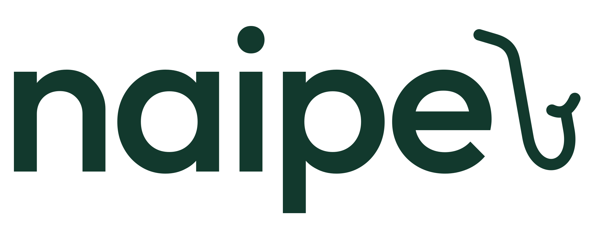
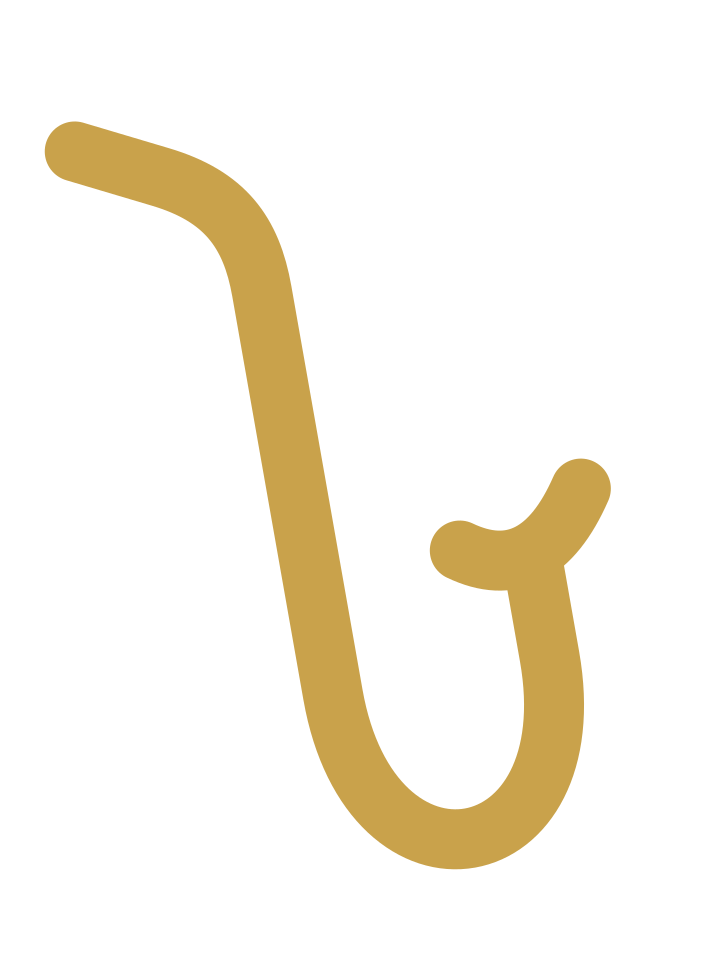
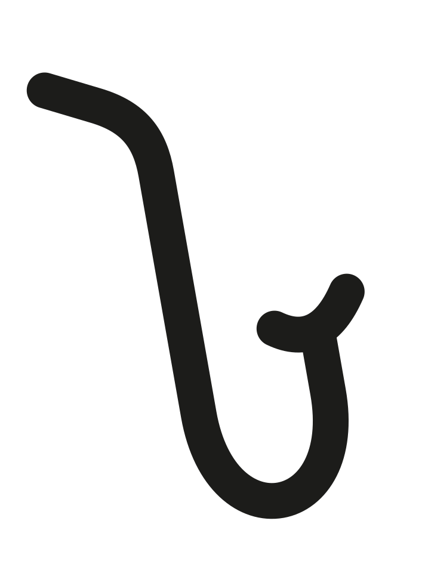

Encontre seu naipe.
A Naipe faz bonés e blusas para músicos e para quem anda junto deles. Peças simples, bem feitas, com referências que quem toca reconhece de longe.
Vestir a música como identidade: mostrar de que lado do palco, ou da plateia, você está.
Para músicos e simpatizantes que querem estilo sem exagero, a Naipe é a marca de vestuário que transforma a linguagem da música em design minimalista.
Conceito de estilo. Nada de estampa de guitarra em chamas: a referência musical aparece no detalhe, no nome e no acabamento.
Você veste e se sente parte do grupo. Todo mundo tem um naipe.
O nome já carrega a ideia: pessoas diferentes tocando juntas. As linhas de produto podem seguir os naipes da música, o que dá nome às peças e conversa direto com o público.
Exemplo de produto: Boné Naipe · Sopros, preto, bordado pequeno na lateral. Etiqueta interna com “Naipe de sopros · afinado em Si♭”.
18 a 35 anos. Toca em banda, igreja, orquestra, estúdio ou no quarto. Quer uma roupa que represente o que ele faz sem parecer fantasia.
Vai a show, segue artista, tem amigo músico. Gosta de cultura e quer um visual limpo com significado.
A Naipe fala como o amigo da banda que te chama pra tocar junto: próximo, seguro e de poucas palavras.
“Novo boné do naipe de sopros. Preto, bordado discreto, pra usar do ensaio ao bar.”
“🔥🔥 LANÇAMENTO IMPERDÍVEL!!! CORRE QUE ACABA!!! 🔥🔥”
Encontre seu naipe · Toca junto · Do ensaio pra rua · Afinado com você · Todo mundo tem um naipe
Base neutra para o produto e o feed respirarem. O verde feltro lembra o forro de estojo de instrumento e a mesa de cartas (naipe também é o símbolo do baralho). O dourado latão aparece pouco, como um solo. As três cores vêm da sua logo.
Ébano 45% · Osso 35% · Feltro 12% · Latão 5% · Grafite 3%
As três são gratuitas no Google Fonts e funcionam no Canva.
O nome em letras minúsculas, arredondadas e firmes, e um saxofone desenhado em um só traço saindo do “e”. O sax é o floreio da marca: lembra o naipe de sopros e dá movimento ao nome.

BRANCA SOBRE ÉBANO
VERDE SOBRE OSSOO sax sozinho. Use onde o nome não cabe ou já aparece perto: foto de perfil, bordado lateral do boné, etiqueta, embalagem.



Deixe ao redor da logo um espaço livre da altura da letra “n”. Use só as versões preta, branca, verde e dourada. Tamanho mínimo: 24 px de altura no digital, 1,5 cm no bordado.
Esticar, girar, separar o sax do nome na logo completa, aplicar sombra ou contorno, ou usar sobre fotos com muita informação.
O @ é sugestão. Confira se está livre e, se não estiver, opções como @usenaipe, @naipe.co ou @naipe.store.
Fotos das peças em fundo neutro e em uso: detalhe do bordado, caimento, cores.
Músicos e clientes usando Naipe. Reposts, ensaios, shows, “qual é o seu naipe?”.
Curiosidades sobre instrumentos e naipes, termos de música explicados de forma simples.
Como as peças são feitas, escolha de tecido, embalagem, a história da marca.
Numa orquestra, naipe é o grupo que toca junto. Cordas com cordas, sopros com sopros.
A Naipe nasceu pra quem vive música, no palco ou na plateia. Bonés e blusas simples, com a música no detalhe.
Em breve, a Coleção 01. Qual é o seu naipe? Conta aqui embaixo.
#naipe #musico #moda #streetwear #musicabrasileira